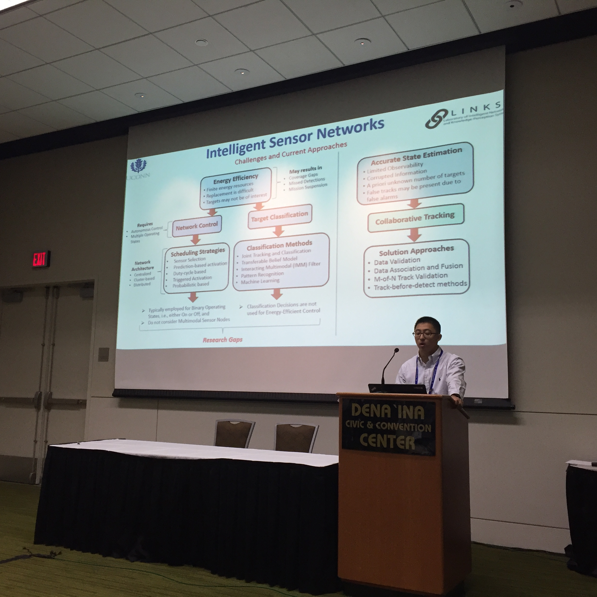
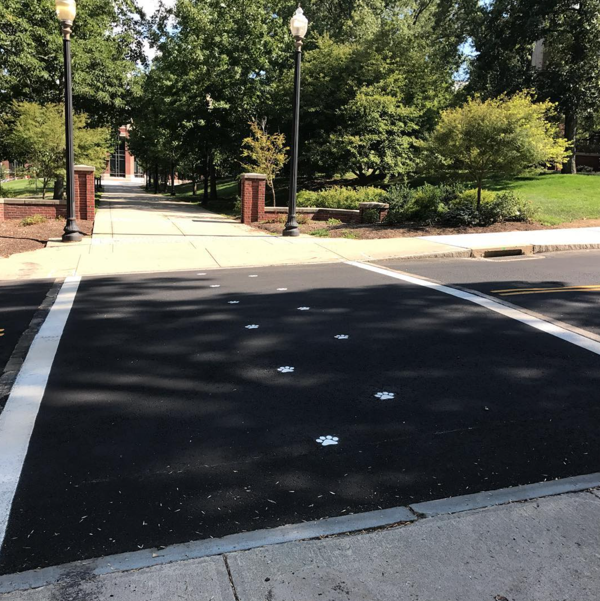

Hello, Welcome to My Website!
- 

- 

I am a Ph.D. candidate in the Department of Electrical and Computer Engineering at the University of Connecticut, Storrs, USA. I obtained my B.Engr. in Automation, and M.Engr. in Control Theory and Control Engineering, in 2006 and 2010, respectively, both from Northeastern University (China). I earned my M.S. in Electrical Engineering from University of Connecticut in 2016 with GPA 4.0/4.0. I have been serving as a reviewer for IEEE Aerospace and Electronic Systems Magazine, Intelligent Service Robots, Neurocomputing, International Conference on Robotics and Automation (ICRA), American Control Conference (ACC), Dynamic Systems and Control Conference (DSCC), etc.
Selected Videos in Coverage Path Planning using Autonomous Vehicles
The ε* Algorithm: Complete coverage path planning in unknown obstalce-rich environments (simulation on Player/Stage). For details, check our paper at [this link]
The ε* Algorithm: Complete coverage in an apartment scenario with adaptive sweep directions (simulation on Player/Stage).
The ε* Algorithm: Complete coverage in a laboratory setting using autonoous ground vehicles with a HOKUYO laser and a Hagisonic indoor localization system.
ICP-based SLAM lawn mowing (gray for pavement and green for target grass).